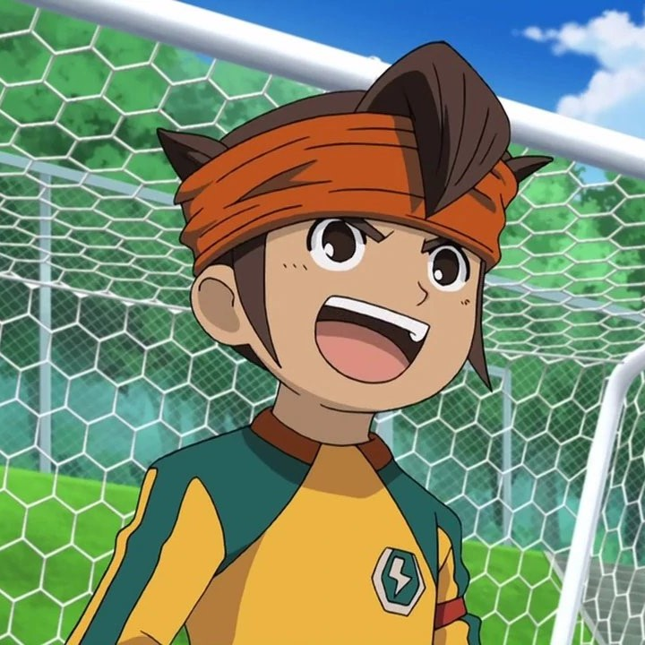
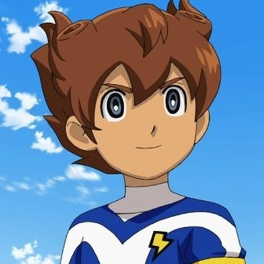
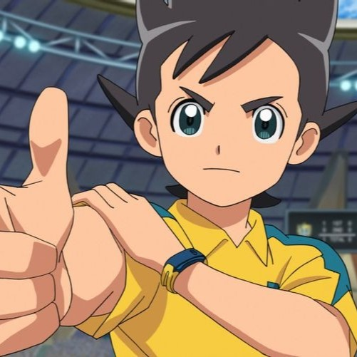
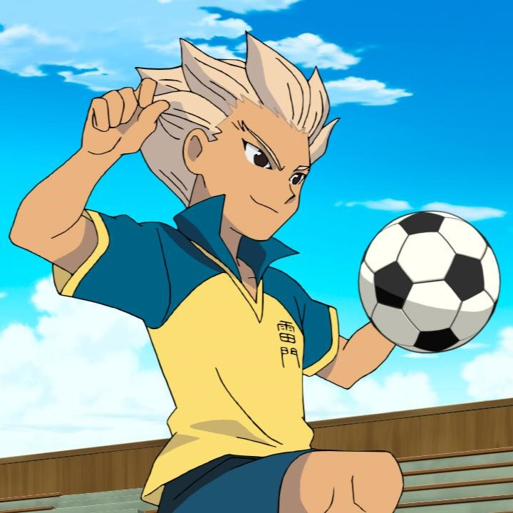
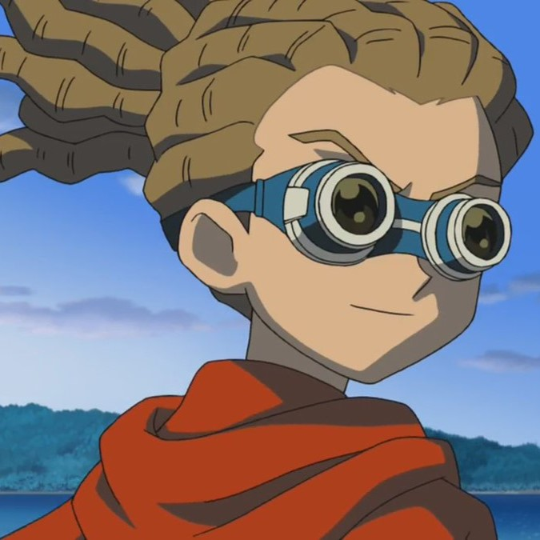
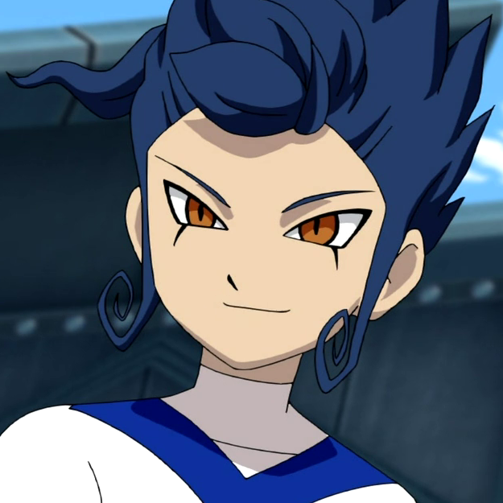
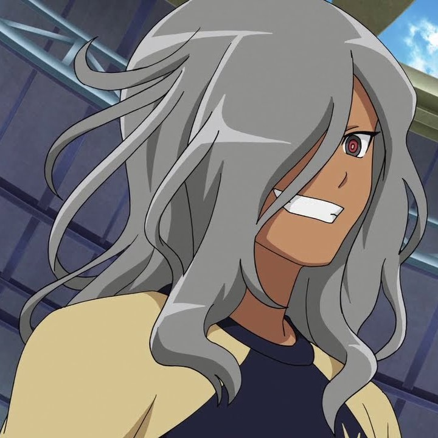
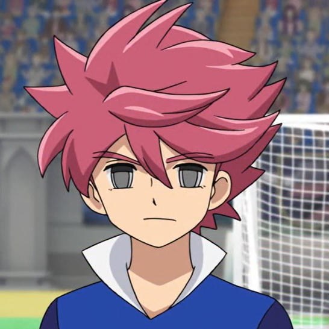

Mark Evans (円堂えんどう 守まもる, Mamoru Endo en japonés y Satoru Endo en Latinoamérica por el doblaje mexicano de su respectiva saga) es el protagonista de la trilogía original de Inazuma Eleven. En su juventud fue el capitán, portero y líbero del club de fútbol del Instituto Raimon y de la selección japonesa, Inazuma Japón. 10 años después, en Inazuma Eleven GO, es el entrenador del club de fútbol del Instituto Raimon y en Inazuma Eleven GO Chrono Stones, fue el entrenador del equipo definitivo, el Chrono Storm. En Inazuma Eleven GO VS Little Battlers eXperience W, es el capitán y portero de Inazuma Japón Legendario. En la segunda línea del tiempo, durante Inazuma Eleven Ares debido a la aplastante derrota que tuvo el Raimon en un amistoso contra el Barcelona Orb, es enviado al Instituto Ribera por parte de los Embajadores de Fútbol formando el club de fútbol desde cero con la ayuda de Billy Miller y, en menor medida, de los otros tres miembros del momento. Más tarde en Inazuma Eleven Orion, es seleccionado como el capitán y portero titular del Inazuma Japón.

Arion Sherwind (松風まつかぜ 天馬てんま, Tenma Matsukaze en japonés) es el protagonista principal de la trilogía de Inazuma Eleven GO. Juega como centrocampista en el Instituto Raimon y más tarde pasa a ser el capitán del equipo a partir del partido contra el Monte Olimpo/Dragon Link por la lesión de Riccardo Di Rigo. En Inazuma Eleven GO Chrono Stones, jugó y fue capitán de Los Arions y El Dorado Equipo 03. También fue uno de los elegidos para formar parte del equipo definitivo, el Chrono Storm obteniendo el poder #10 de las Enseñanzas del Maestro y siendo el capitán del equipo. En Inazuma Eleven GO Galaxy, fue seleccionado como capitán de la selección de Inazuma Japón (GO). Sin embargo, tras descubrir la verdad del torneo Fútbol Frontier Internacional Visión 2, el equipo pasa a llamarse Earth Eleven en el torneo Gran Celesta Galaxy. Ha tenido el dorsal 8 en todos los equipos que ha jugado

Sonny Wright (稲森いなもり 明日人あすと, Asuto Inamori en japonés) es uno de los protagonistas principales de Inazuma Eleven Ares e Inazuma Eleven Orion. Es un delantero y, durante la final, centrocampista del Raimon Isla Remota y hasta el momento del partido del semifinales contra el Instituto Ribera era el segundo al mando del equipo, pero toma el puesto de capitán temporalmente para la final del Fútbol Frontier contra la Academia Plenilunio cuando Maxime se lesiona en el partido anterior, al perfeccionar la Triangulación Multicolor, y le cede ese honor, a lo que Sonny acaba aceptando pese a que al principio estaba dubitativo. En Inazuma Eleven Orion es seleccionado como uno de los centrocampistas del Inazuma Japón, y más tarde de los Kinuns Cho contra La Sombra de Orión.

Axel Blaze (豪炎寺ごうえんじ 修也しゅうや, Shuya Goenji en Japonés) es uno de los personajes principales de la trilogía original de Inazuma Eleven. En su juventud, fue el delantero estrella del Instituto Kirkwood, el Instituto Raimon y la selección de Inazuma Japón. En Inazuma Eleven GO, inicialmente era el Emperador del Sector Quinto durante el Camino Imperial haciéndose llamar Alex Zabel (イシドシュウジ, Shuji Ishido en japonés) y también era el entrenador del Colegio Monte Olimpo. En la Inazuma Eleven GO VS Little Battlers eXperience W, juega como delantero del Inazuma Japón Legendario. Lleva el dorsal número 10 en casi todos los equipos en los que ha jugado. En Inazuma Eleven GO Galaxy, actualmente trabaja en la Asociación Japonesa de Fútbol Juvenil. En la segunda línea del tiempo alternativa, donde ocurre Inazuma Eleven Ares, tras el aplastante resultado del amistoso del Raimon contra el Barcelona Orb.

Jude Sharp (鬼道きどう 有人ゆうと, Yuto Kido en japonés) es uno de los personajes principales de la Trilogía Original de Inazuma Eleven. En su juventud, fue inicialmente miembro y capitán de la Royal Academy hasta su aplastante derrota contra el Instituto Zeus, momento en el que se une al Instituto Raimon para vengar la humillación que ellos le hicieron a él y a sus ex-compañeros de la Royal Academy. En la tercera temporada, fue seleccionado para Inazuma Japón, siendo el primero de todos en recibir tal honor. En Inazuma Eleven GO, es actualmente el entrenador de la Royal Academy y temporalmente del Instituto Raimon por la ausencia de Mark. En Inazuma Eleven GO Chrono Stones ayudó al Raimon una vez más en la época de David Evans y fue el entrenador de El Dorado Equipo 01. En Inazuma Eleven GO VS Little Battlers eXperience W, es miembro del Inazuma Japón Legendario. En la segunda línea del tiempo, en Inazuma Eleven Ares Jude fue transferido a la Academia Polaris y mas tarde es seleccionado como uno de los centrocampistas del Inazuma Japón en Inazuma Eleven Orion.

Victor Blade (剣城つるぎ 京介きょうすけ, Kyosuke Tsurugi en japonés) es uno de los protagonistas principales de la trilogía de Inazuma Eleven GO. Inicialmente, un Imperial de primera clase del Sector Quinto que se terminaria uniendo al bando de Raimon. En Inazuma Eleven GO Chrono Stones, fue nombrado como capitán de El Dorado Equipo 01 y fue uno de los elegidos para formar parte del equipo definitivo, el Chrono Storm obteniendo el poder #6 de las Enseñanzas del Maestro. En Inazuma Eleven GO Galaxy, fue seleccionado como un delantero del Inazuma Japón, que más tarde sería el Earth Eleven. Durante el Gran Celesta Galaxy, Victor fue secuestrado por un impostor siendo llevado al planeta Falam Orbius. Victor se une al Falam Medius como delantero y capitán temporal del equipo. Con la aparicion de la Flota Ixar, vuelve al Earth Eleven para el partido final. En Inazuma Eleven GO VS Little Battlers eXperience W, es un delantero del Nuevo Inazuma Japón. Ha tenido el dorsal 10 en casi todos los equipos que ha estado y es uno de los mejores amigos de Arion Sherwind, a quién antes vió como un enemigo.

Riccardo Di Rigo (神童しんどう 拓人たくと, Takuto Shindo en japonés) es uno de los protagonistas principales de la trilogía de Inazuma Eleven GO. Fue inicialmente el capitán del Instituto Raimon hasta que tuvo que ceder su puesto de capitán a Arion después de lesionarse en el partido contra el Instituto Universal pasando a ser el segundo al mando del equipo de forma permanente y quedándose Arion con la capitanía. En Inazuma Eleven GO Chrono Stones, tomó temporalmente el puesto de capitán del Raimon en la era del Rey Arturo por la ausencia momentánea de Arion. También pasó a ser el capitán de El Dorado Equipo 02 y fue uno de los elegidos para formar parte del equipo definitivo, el Chrono Storm obteniendo el poder #1 de las Enseñanzas del Maestro. En Inazuma Eleven GO Galaxy, fue seleccionado para formar parte de la selección nacional del Inazuma Japón. Pero cuando se supo la verdad del torneo Fútbol Frontier Internacional Visión 2, pasa a ser jugador del Earth Eleven. Inicialmente, jugaba como delantero cuando estaba en el primer año de curso en el Raimon. Actualmente juega como centrocampista y ha tenido el dorsal 9 en todos los equipos que ha estado.

Eliott Ember (灰崎はいざき 凌兵りょうへい, Ryohei Haizaki en japonés) es uno de los protagonistas principales de Inazuma Eleven Ares e Inazuma Eleven Orion. Era el delantero estrella de la Academia Polaris, hasta que su equipo fue eliminado del torneo Fútbol Frontier al ser derrotados de forma muy aplastante por la Academia Plenilunio. Para la final del torneo, se une al Raimon Isla Remota gracias a Jude y su entrenador Travis para obtener su revancha contra Heath y su equipo, además de que quiere destruir el proyecto Ares. Elliot es el delantero estrella de Academia Polaris. Es un jugador arrogante e indiferente que, como él mismo ha dicho, sólo hace lo que quiere hacer, llegando incluso a ignorar las órdenes de Jude de participar en el juego contra el Raimon Isla Remota hasta que éste le informa de que pueden ser la "luz" que ha estado buscando. Percival Travis afirma que rara vez se agita durante un partido, ni lo juega para ganar. Sin embargo, una vez que sucede, se convierte en un jugador demasiado agresivo. También parece propenso a tener ataques de risa casi maníacos Pero tras su segundo enfrentamiento particular con Sonny Wright cambió su opinión sobre el fútbol, mirándolo como algo muy divertido y a lo que merece la pena jugar, en vez de verlo como un simple método para lograr su venganza contra el Proyecto Ares como inicialmente lo veía

Heath Moore (野坂のさか 悠馬ゆうま, Yuma Nosaka en japonés) es uno de los protagonistas principales de Inazuma Eleven Ares e Inazuma Eleven Orion. Es el capitán y uno de los delanteros de la Academia Plenilunio durante el Fútbol Frontier (Ares) y posteriormente es seleccionado como uno de los jugadores de Inazuma Japón, la selección nacional de Japón, de la que es capitán en el partido frente a los Bailarines Eternos por la ausencia de Mark Evans y uno de los mejores jugadores de la misma. Aparece por primera vez durante el episodio 1, viendo el partido entre Raimon Isla Remota y la Academia Polaris junto a Duske Grayling. Después de que Basile anota el primer y único gol de Raimon, comenta que parece que se están divirtiendo mientras juegan al fútbol pero Duske responde que eso es imposible, con lo que Heath está de acuerdo. En el Episodio 2, después de que Raimon pierda por 1-10, Duske comenta que el resultado fue el esperado. Heath está de acuerdo con su amigo pero le pregunta si podría investigar un poco al Raimon por él. Al comienzo del partido entre Raimon y el Instituto Rampart se le vio en las gradas con Duske y allí se encontraron con Elliot, aunque después de una pequeña conversación sobre sus intereses en el Raimon siguieron su propio camino.